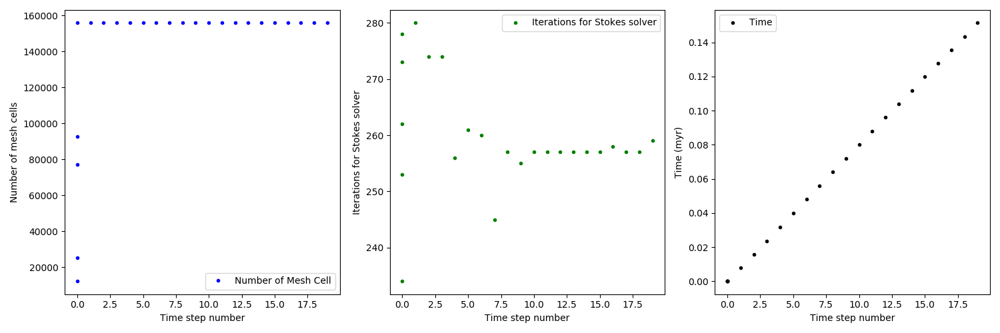
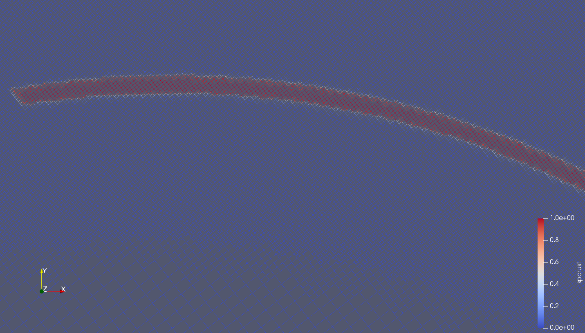

Case kyoma_mesh_refinementULV3.000e+01testIAR4LR3
Overview
The case is configured with:
upper_lower_viscosity: 30.0
The case is tested with:
initial_adaptive_refinement: 4
longitude_repetitions: 3
The case is genearated with extra settings:
LowerV: 1.5e-06
P660: 21000000000.0
T660: 1663.0
Plots
Statistics.png

DepthAverage_t0.00000000e+00.png

PvMesh0.png
